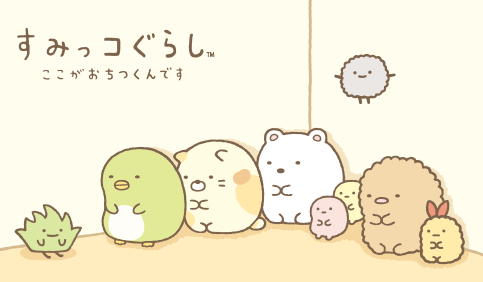
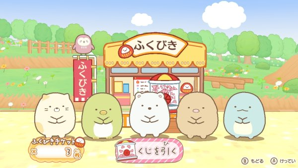

Sumikkogurashi 캐릭터 소개
SUMIKKO GURASHI are the characters living a quiet and solitary life in the corner. They might be able to settle down when they’re in the corners but they don’t like being in the center of the room. When they’re taken to the center of the room, they always rush back to the corner.Japanese site Wikipedia : Sumikko Gurashi (すみっコぐらし Sumikko Gurashi) is a set of fictional characters produced by the Japanese company San-X. The name roughly translates to “life in the corner”. The main Sumikko characters are Shirokuma, a polar bear who dislikes the cold, Penguin? who is unsure of being a penguin, Tonkatsu, a piece of leftover pork cutlet, Neko, a timid and anxious cat, and Tokage, a dinosaur who pretends to be a lizard. Minor Minniko characters include Furoshiki, a polka dot furoshiki cloth, Zassou, a weed with a positive attitude, and Tapioca, multi-colored leftover tapioca pearls. The characters were created by Yuri Yokomizo, a graphic designer working for San-X, and the first products were released in 2012. Their main inspiration was the feeling of comfort when one is near a corner, and they were based on Yokomizo's notebook doodles when she was a student. A wealth of merchandise, such as stationery, plush toys, and clothing, is sold. Books, mobile apps, and video games based on the franchise have also been produced. An animated film was released in 2019.

